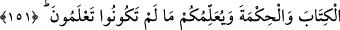

işte İbrâhîm (a.s.)’e uymakla övünüyorlardı. İşte bu sebeple, geçici bir maslahat
sebebiyle kısa bir süre ayrı kaldıktan sonra tekrar İbrâhîm (a.s.)’in kıblesine dönen
Arap halkı, büyük bir nimete kavuşmuş oldu.
Allah’ın kullarına olan nimeti iki türlüdür: Vehbî ve kesbî. Vücud sağlığı ve
organların sıhhati gibi şeyler, vehbî nimetlere örnektir. İman ve emirlere uyup
nehiylerden kaçınmak sûretiyle yapılan sâlih amel ise kesbî nimetlere örnektir. Her iki
nimet de, kişinin iki cihan saâdetini elde etmesine yardımcı olmaktadır.
Allah Teâlâ, kıblenin değişmesi emriyle İslâm dîninin hükümlerini ve alâmetlerini
öğretmek istemiştir.
151. Nitekim kendi içinizden size âyetlerimizi okuyan, sizi kötülüklerden
arındıran, size Kitab’ı ve hikmeti tâlim edip bilmediklerinizi size öğreten bir Rasûl
gönderdik.
Yine size olan nimetimizi tamamlamak kabilinden olmak üzere kendi milletinizden
olan Muhammed (s.a.)’ı peygamber olarak gönderdik. Bu da, başka bir nimetle
kıyaslanmayacak kadar büyük bir nimettir. Gönderdiğimiz bu peygamber size Kur’ân-ı
Kerîm’in âyetlerini okumakta ve sizi, nefislerinizi günah kirlerinden temizleyecek
amelleri yapmaya teşvik etmektedir. Çünkü peygamberlerin görevi ümmetlerini, şirk ve
mâsiyetlerden temizleyecek amellere dâvet ve teşviktir. Yoksa onları bizzat kendi
elleriyle temizleyecek değillerdir.
İçinizden gelen bu rasûl, size Kur’ân-ı Kerîm’in mânâsını ve O’nun içerisindeki
hidâyet ve nûr kaynağı olan hüküm ve prensipleri, sırları öğretmektedir. Peygamber
(s.a.) kendisine indirilen Kur’ân âyetlerini ezberlemeleri için ashabına okurdu. Böylece
Kur’ân, hem sadırlarda, hem de satırlarda muhâfaza edilip tevâtüren günümüze kadar
gelmiş, kıyâmete kadar da bozulmadan mûcize olarak devam edecek ve tilâveti, ister
namazda ister namaz dışında olsun, ibâdettir. Bunun yanında Hz. Peygamber, onun nûru
ve hidâyeti ile doğru yolu bulsunlar diye Kur’ân’da bulunan hakîkatleri ve sırları
açıklardı.
“O Peygamber size hikmeti öğretmektedir.” âyetindeki hikmet, “Sözde ve amelde
isâbetli davranmak.” demektir. Ancak bu iki vasfı taşıyan kimse hakîm olarak
isimlendirilir. İmâm Fahreddin Râzî, şöyle der: “Bir şeyi ihkâm etmek, onu lüzûmsuz
şeylerden arındırmaktır. Buna göre hikmet kişiyi cehâlet ve hatâdan uzak tutan bir
haslettir.”
Kur’ân-ı Kerîm ile amel etmek, onun mânâsını bilmeye, mânâsını bilmek ise
lâfızlarını bilmeye bağlıdır. Tezkiye ise peygamber gönderilmesinin son hedefidir.